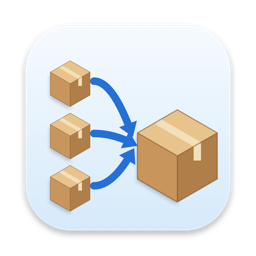
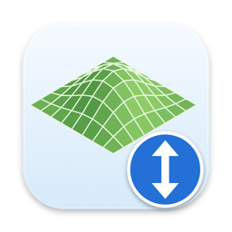

Free tools for The Sims 2
Utilities for building, fixing and organizing your game, most of them made for Mac players, who went without them for twenty years. All free and open source.


SimPE
Based on SimPE by Quaxi (Ambertation) and Chris Hatch
The package editor every Sims 2 creator uses: open any .package file and edit
objects, clothing, Sims, neighborhoods and more. This version is a maintained fork of
SimPE 0.77, updated to 64-bit .NET 8 with bug fixes and the NSFW content removed.
- Mac: a normal Mac app with its own copy of Wine built in, so there's nothing else to set up. Runs on Apple Silicon (through Rosetta) and Intel, macOS 10.15 or later. Works with the Super Collection.
- Windows: no DirectX or Nvidia DDS tools needed.
- Linux: runs under Wine 11 or later. No DirectX or Nvidia DDS tools needed.
Clean Installer for Mac
Mac version of Mootilda's Sims2Pack Clean Installer
Open a .Sims2Pack file and see exactly what's inside before anything touches
your game. Pick the parts you want, skip the ones you already have, and the Clean Installer puts
each one in the right folder: Downloads, Saved Sims, the lot catalog or the Teleport folder.
Installed Sims show up in Body Shop.
Source: GitHub
Delphy's Download Organizer for Mac
Mac version of Delphy's Download Organiser, ported with Delphy's permission
A catalog of everything in your Downloads folder. See each package's name, type and description, sort and filter them, find duplicates, orphaned recolors and broken files, preview textures, and move packages into subfolders.
Source: GitHub
CC-Merger for Mac
Mac version of CCMerger by Lazy Duchess
Merges a folder full of .package files into a few large ones. Fewer, larger
packages load faster and are easier to manage.
It also fixes a Super Collection crash: with many thousands of loose packages in Downloads, the game can crash while rebuilding its catalog. One Downloads folder of 7,426 packages, merged into 4, loaded fine.
Source: GitHub
Hood Checker for Mac
Mac version of Hood Checker by Mootilda and Andi8104
Checks a neighborhood for the leftovers that cause corruption: family ties, relationships and memories that still point to Sims who no longer exist. It lists every problem it finds and can remove them for you. It backs up the neighborhood before changing anything.
Source: GitHub
HoodReplacer for Mac
Mac version of Mootilda's HoodReplace
Moves an existing neighborhood onto a different terrain. Your lots and families stay; the lots are settled onto the new ground. Roads, bridges, trees and decorations can be replaced, refitted to the new ground, or removed.
Source: GitHub
Road Editor
Uses neighborhood code by Mootilda
Draw and erase roads on a neighborhood you already have, including bridges up to 8 squares long. It keeps you from making roads the game can't handle: no roads up cliffs or through lots, and it never removes the road in front of a lot.
- Mac: Super Collection, macOS 10.15 or later.
- Windows: Ultimate Collection and Legacy Collection, 64-bit Windows. Windows will warn you the first time you run it; see How to Install.
LotAdjuster for Mac
Mac version of Mootilda's Lot Adjuster 3.6
Make a lot bigger or smaller by adding or removing rows of tiles on any side, even after it's been built on. Need a deeper back yard? Add ten rows to the back.
Source: GitHub
GridAdjuster for Mac
Mac version of Mootilda's TS2GridAdjuster
Changes the height of the ground and floors on a lot. Flatten it, slope it, curve it, make split levels and sunken rooms, or sink a house to make a real basement with no sloped ground around it. A Finish basement step, new in the Mac version, tidies up the result.
Source: GitHub
ConvertiWall for Mac
Mac version of Mootilda's ConvertiWall
Changes walls of one type into another type within an area of a lot, for example ordinary walls into foundation walls, or back again. Wallpapers are kept.
Source: GitHub
About
I'm Rhiamom, a Sims 2 creator since the early days. These tools started because Mac players had been left out: most of the community's utilities were Windows-only and the source code was sitting there, so I brought them over.
Most of these tools are other people's work, and they deserve the credit: Quaxi and Chris Hatch for SimPE, Lazy Duchess for CCMerger, Delphy for the Download Organiser, and above all Mootilda, whose tools make up most of this page. Mootilda has passed away. Her code runs in these Mac versions as she wrote it, kept as she left it.
All the Mac apps are signed and notarized by Apple. Found a bug? Open an issue on the tool's GitHub page, or find me on Tumblr.